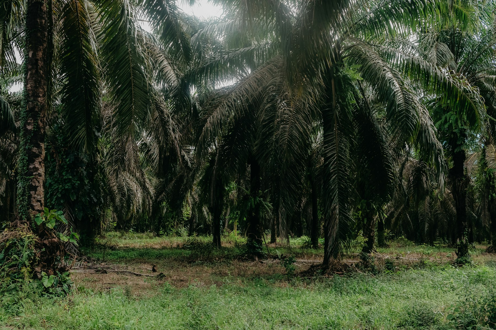
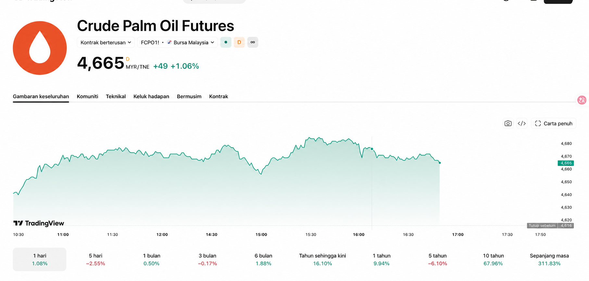

Permintaan yang meluas
Minyak sawit digunakan dalam pembuatan makanan, penjagaan diri dan sektor perindustrian, membentuk corak permintaan yang pelbagai.
MALAYSIA · PALM OIL INDUSTRY
Dari ladang ke rantaian bekalan global, fahami peluang, kitaran dan risiko industri sawit Malaysia melalui perspektif yang menyeluruh.
Maklumat ini untuk tujuan pendidikan dan kajian sahaja, bukan nasihat pelaburan.

HARGA PASARAN
Paparan rujukan harga dan carta FCPO kontrak berterusan.

Imej statik untuk rujukan visual sahaja — bukan data pasaran langsung.
THE INVESTMENT THESIS
Satu komoditi yang menghubungkan makanan, penjagaan diri, biotenaga dan perdagangan global. Peluang wujud di seluruh rantaian nilai, namun keputusan perlu berasaskan penawaran, permintaan dan asas operasi.
Minyak sawit digunakan dalam pembuatan makanan, penjagaan diri dan sektor perindustrian, membentuk corak permintaan yang pelbagai.
Malaysia memiliki ekosistem penanaman, pemprosesan, penapisan, logistik dan derivatif yang matang untuk menilai peluang di pelbagai peringkat.
Cuaca, inventori, kadar tukaran dan dasar mempengaruhi harga. Kerangka kajian yang jelas lebih penting daripada mengejar pergerakan jangka pendek.